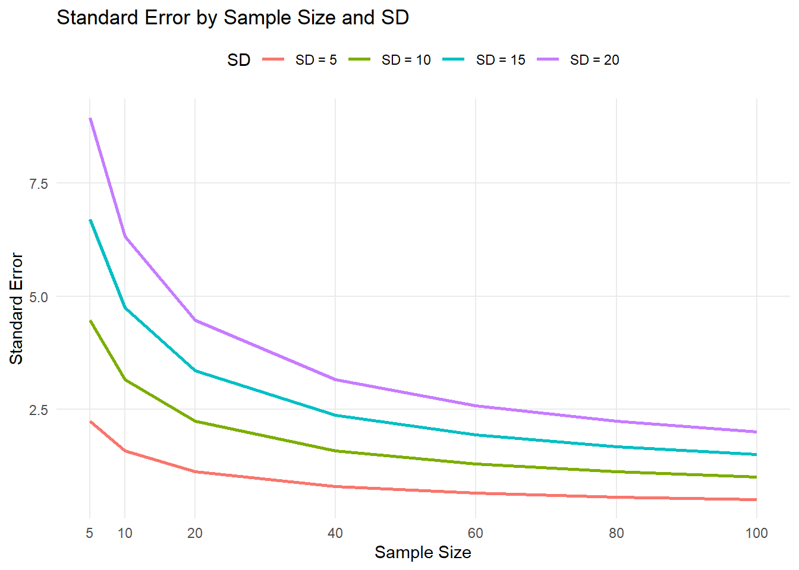

1 Week 2 - Practical
1.1 Learning Outcome:
- Understand measurement accuracy concepts and their application to exercise testing and measurement
- Evaluate the feasibility of different tests according to environmental conditions and client characteristics
- Demonstrate basic data processing and analytical techniques for calculating distribution based statistics (Mean, Standard Deviation)
1.1.1 Assessments:
This is the first of three lab weeks (weeks 2, 3 and 4) where the data you collect will be used for your first professional report assessment (1-page report in week 9). HELPFUL TIP: The more attention you pay to the quality of your data during this lab, the easier it will be to complete your professional.
1.1.2 Background:
Maximal sprinting speed and its derivative acceleration have both been shown to be key discriminators in playing status across many sports. Whilst, performing a maximal sprint test would give the most valid insight into these qualities, it may not always be possible to perform this test in a practical environment due factors such as, perceived risk of injury and cost of equipment (timing gates, radar gun etc). Hence, identifying cost effective test that may give insight into these qualities is of interest.
Two commonly used test that are used as both proxy measures of acceleration and sprinting speed respectively are the standing broad jump (SBJ) and assessment of lower limb stiffness. Whilst a number of techniques for measuring lower limb stiffness exist, the test we will focus on today is the drop jump test.
PART 1 of today will involve collecting data across a 0-5 and 0-10m sprint test, standing broad jump and drop jump test (look to get at least two trials across each test). PART 2 aims of today involve calculating basic summary statistics that represent the mean and spread/deviation of the data and other descriptive statistics discussed in the lecture.
1.2 Practical Procedures (PART 1):
Before completing each assessment as a group discuss what you think would be an appropriate warm up and then action the warm up together before completing trials.
For each assessment make at least one individual is updating the results into the Google form below.
https://docs.google.com/spreadsheets/d/1ovjxRvN4N5482ikOBO_SK1qetU6CBPnkArYUs_rRigM/edit?usp=sharing
1.2.1 Broad Jump
https://www.youtube.com/watch?v=n0UeHxglMJ4
Position yourself accurately by standing behind the marker with your toes aligned directly with it - proper starting position is crucial for consistent measurement.
Utilize the permitted counter-movement effectively by bending your knees and trunk while swinging your arms before takeoff, as this motion helps generate maximum power for the jump.
Execute a proper two-foot takeoff and landing, ensuring both feet leave and touch the ground simultaneously - any step before takeoff will invalidate the attempt.
Maintain balance during landing since falling backward will require a repeat attempt - focus on landing firmly on both feet with controlled momentum.
Complete multiple attempts to achieve your maximal distance, which will be measured from the marker to the point of first contact (typically heel strike) upon landing.
1.2.2 Max speed assessment
Complete a standardized warm-up before beginning maximal 10m sprint testing, with timing gates positioned at both 5m and 10m distances
Organize into groups of 4-5 students and establish a clear testing order, with each athlete performing multiple maximal sprint effort
Record sprint times using both electronic timing gates (Swift SpeedLight Timing™ Gates) and handheld stopwatches, ensuring to match and record corresponding times from both measurement methods for each attempt
Ensure all group members complete their designated number of sprint attempts while maintaining accurate record-keeping of all times
1.2.3 Drop Jump assessment
Utilsing the EZ jumpmat.
Stand on a box or elevated platform behind.
Place your hands on your hips.
Keep your chest up and look forward.
Step off the box; then.
Land on the plates with both feet at the same time;
Immediately jump as high as possible whilst looking to minimize ground contact time; then
Land softly, remaining completely still on the jump mat.
Record RSI from device
1.2.4 Interactive stiffness visual
Below is simplified interactive visualization to help build intuition of how we can thinking about the legs as springs.
Click to expand
Compare Springs with Different Stiffness
Softer Spring
k = 30 N/m
Force = 0 N
Max Height = 0 cm
Stiffer Spring
k = 90 N/m
Force = 0 N
Max Height = 0 cm
What difference do you notice between the two springs that have different stiffness values?
1.3 Practical Procedures (PART 2):
REMEMBER: the data you collect today and over the previous week’s labs will be used for your first 1-page report…so be attentive and ask questions during PART 2 of the lab session!
Use lecture material as a reference point to calculate mean and standard deviation of data collected. ( you may use excel functions but also have a go going step by step through calculations)
Practice plotting data has a histogram.
Calculate the mean, SD and CV%
Calculate Z – Scores (Also outlined in lecture material)
Reflection Question:
Why is important to understand how your data is distributed?
Why is the practical reason for us transforming numbers into a Zscore?
When trying to describe a distribution what are the most important components we would want to know?
2 Descriptive statistics recap
Material discussed below was discussed in more detail in the week 2 lecture.
An essential component of being a sport and exercise scientist is the ability to summarise results collected from groups or individuals correctly. Luckily many of summary statistics that you will need are things that you would have covered in yr 8 and 10 mathematics. These are parameters such as mean, median, mode, standard deviation (SD) and coefficient of variation (CV%).
An important aspect to remember is the idea that data we collect from a group consider a “sample” from the population. To help build your intuition around this, lets say I wanted to summarise the sprint test results collected from SPRT2002. Now imagine I only used one practical class sprint times to reflect the full cohort of SPRT2002. It would be reasonable for you to say that I am only using a sample from the full cohort to represent the sprint capability. This situation arises effectively any time we collect data from a group as there always some of the population of interest using missing from our sample.
2.0.1 Fig1
The visualization below demonstrates random sampling from a normal distribution with a fixed population mean of 50. You can adjust the population standard deviation using the slider, which changes the spread of the underlying distribution.
When you click “Add Samples,” the tool draws a random sample from this population (visualized as green dots falling from the distribution curve), then calculates and displays key sample statistics including the mean, median, standard deviation, standard error, confidence intervals, range, and coefficient of variation.
This interactive demonstration illustrates an important statistical concept: in real-world research however, we never know the true population parameters (mean and SD). Instead, we only work with sample statistics to make inferences about the unknown population. By repeatedly drawing different samples, you can observe how sample statistics vary around the true population values, highlighting concepts like sampling variability and estimation precision
2.0.1.1 Reflection
What did you notice when you changed the population SD slider and sampled again?
Did you notice anything about the stability and or precision of the sample mean and SD estimates when sampling from lower sample sizes e.g. 5 to higher sample sizes e.g. 100? (The below interactive visual may help emphasize this relationship)
Download the data using the “Download Data” button and see if you are able to replicate the sample based parameters in excel (mean,median,SD,CV% and create a Zscore for each participant)?
2.0.2 Fig2
The figure below is just an extension of the figure above and may help better show how sample estimates may vary around the true population mean, and how the amount they vary are a function of both the sample size and SD.
To best utilise the visualization below,either leave one of the slider values constant while you change the value of the other slider.
For example, you may draw 10 samples with the sample size set to 30 and population SD set to 10, then change the sample size value to 50 draw 10 values, then 5, then 100 etc. You may flip this process around then altering the SD values leaving the sample size set at a constant value. Each time have a think about how you might describe what you are seeing.
2.0.3 Reflection
Based on what you may noticed from changing both the sample size and standard devation (SD) in the above visualisation, the figure below looks summarise this relationship you may have observed. This summary will show how the SE - Standard error (discussed more below) changes as function of both the sample size and the size of the SD.
Click to expand
Looking at the above plot we can see that as sample size increases we see a reduction in a variable called the “standard error - (SE)”. Likewise we can also see that larger SDs for a given sample size will have larger standard errors.
Based on how the SE is calculated (discussed below) if you want to reduce SE by half, you could either:
Reduce the SD by half (get a more homogeneous sample), OR Increase the sample size by a factor of 4 (Notice how there is diminishing returns in reducing the SE as the sample size gets larger)
2.0.4 But what is the standard error?
The standard error of the mean (SE and SEM) represents the expected variability of sample means if we were to repeatedly draw samples of the same sample size from the population. We could calculate the SE by taking the standard deviation of the sample means from the simulation above. However,unfortunately in research we often only ever have access to one sample to try and estimate a SE from. Luckily we can sill estimate a SE for one sample using the below formula
Standard error of the mean (SE) = sample SD/ sqrt(N)
where N is the number of participants.
This in a similar fashion to how the sample SD is measure of dispersion/spread of observations around the mean, can be thought of as the level of variability a sample means with some given sample size and SD would vary around the true population mean from repeated sampling.
2.0.5 Confidence intervals
Perhaps a simpler way to think of the SE is a measure of confidence we have that our sample mean would be reflective of the true population mean. In samples with lower number of participants we can be less confident that the sample mean is representative of the true population mean, whilst in higher sample size studies we can be more confident that the sample reflects the true population mean. One way we highlight this uncertainty/confidence is by using something called confidence intervals CI.
The simplest confidence interval would be to just use the calculated standard error from earlier to set lower and upper limits around the sample mean.
For example,
sample mean = 40,
SE = 5
LL = 40 - 5 = 35
UL = 40 + 5 = 45
The above would represent a 68% level confidence interval, I want you to have a think about why this might be termed a 68% confidence interval?
Hint
Think back to the normal distribution and how much the standard deviation tells us about the spread of data.
What is more commonly used however, is a 95% confidence interval which would be calculated by multiplying the SE by 1.96.
In our example above this would equate to
95% LL = 40 - (5*1.96 = 9.8) = 30.2,
95% UL = 40 + (5*1.96 = 9.8) = 49.8.
The interpretation of a 95% confidence interval is that if we were to repeat this sampling process many times and calculate the interval each time, about 95% of these intervals would contain the true population mean. Wider confidence intervals indicate more uncertainty in our estimate, while narrower intervals suggest greater precision. This is why larger sample sizes (which lead to smaller standard errors) result in narrower confidence intervals and more precise estimates of the population mean.
To help visualize this, go back to Figure 2. You will notice a button called “Show Confidence Interval” which will display the 95% confidence interval around each sample mean, illustrating how the precision of our estimates changes with different sample sizes and population standard deviations